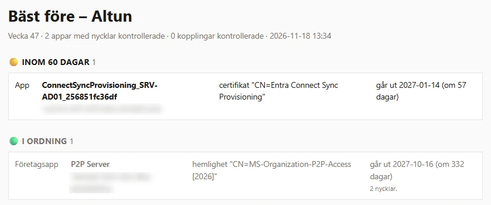

← All projectsOpen source
04 / 06
Bäst före
Shows what in a Microsoft environment is about to stop working.
04 / 06
Shows what in a Microsoft environment is about to stop working.
When an app secret expires, or when the person who signed in a connection leaves, integrations stop working. Often nobody notices until something has broken.
Bäst före (Swedish for "best before") shows what's about to stop working while there's still time to change it.
